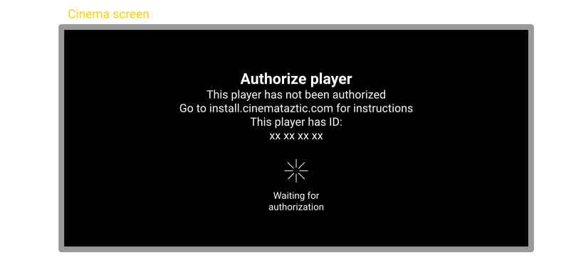
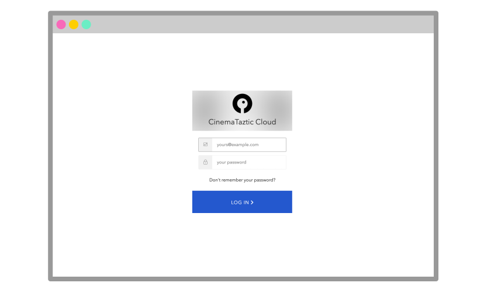
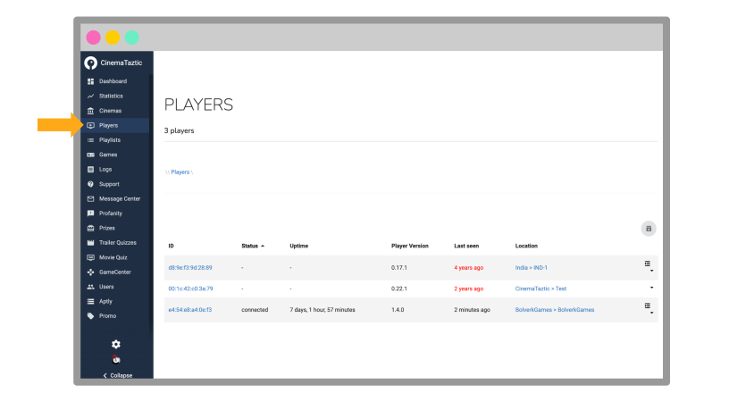
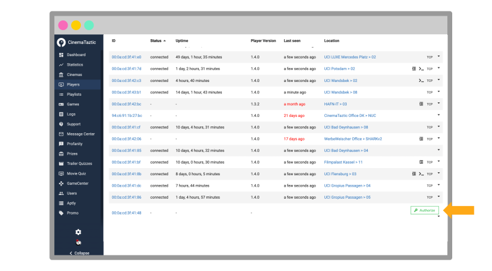
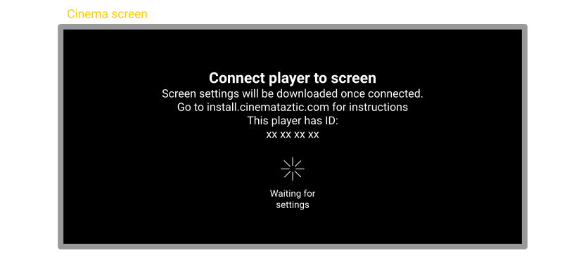
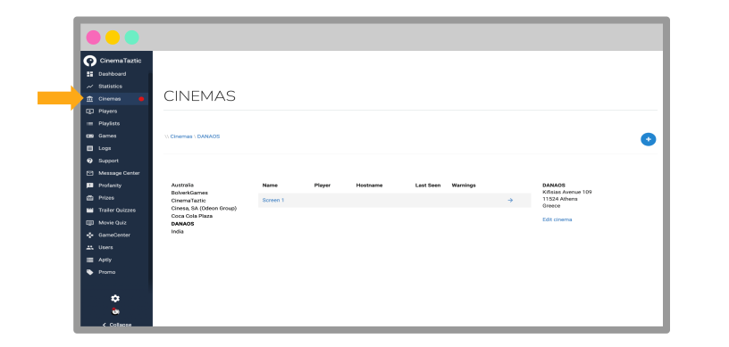
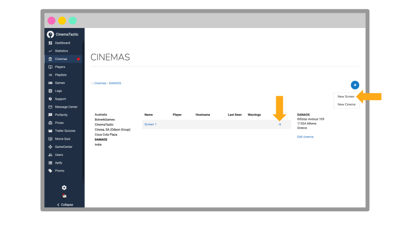
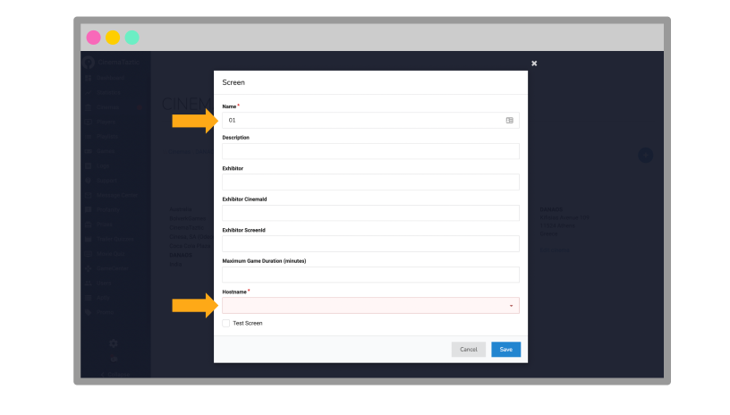
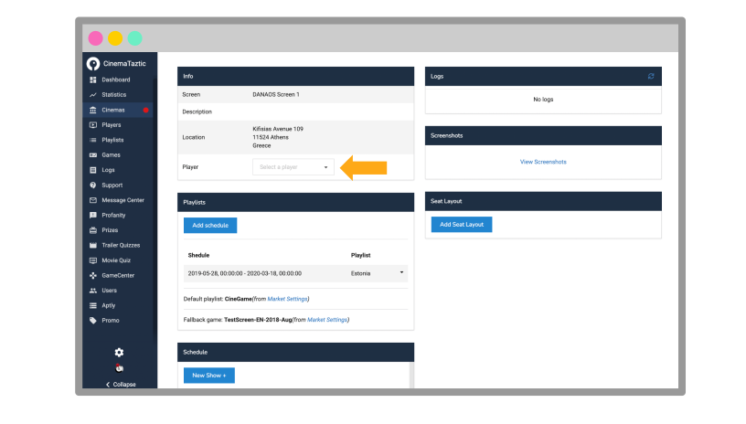

Network automation
- Cinemataztic DCH
- Power cable
- HDMI cable
- Network cable
Analog automation
- 24V Digital Input Unit
- USB cable
If audio is not to go via HDMI
- External audio interface
Video (1920 × 1080 @ 60 Hz)
Two video output options:
- HDMI
- DisplayPort
Audio
Three audio output options:
- HDMI
- DisplayPort
- Toslink / S/PDIF over an external optical sound card (USB)
Requirements
- Connected to the internet over ethernet (RJ45)
- The firewall must allow the machines to connect to our servers via ports 9933 (TCP/UDP), 80, 3024 and 443
More about setting up the network in Internal settings.
Ethernet
24V I/O
Needs 2 extra pieces of hardware per Cinemataztic player:
- LucidControl DI4 listens for 24V cues to trigger a playlist/game.
- Some cinema playlist software needs a 24V pulse back to resume the playlist after the CineGame. LucidControl DO4 sends this cue back to the cinema’s 24V automation equipment.
On a Shark
- Download the 20.04 live-server-amd64.iso and flash it onto a USB stick (we recommend balenaEtcher)
- Insert the USB stick in the machine you want to install
- Power on the machine and immediately tap F8 or Delete repeatedly until a BIOS screen appears
- In the BIOS menu, press F8 to open the boot select menu
- Select UEFI USB
- The install may look stuck, but please be patient. When it is finished, the PC powers off. If an error occurs, check the network cable and try again
- Remove the USB stick and power on the PC
On a Dell
By default the machine boots from the internal hard disk. To boot from the USB stick:
- Connect a keyboard to the machine and find the F12 key
- Power on the machine
- Press and release F12 repeatedly until a boot select menu appears
- Select “Boot from UEFI USB” and press Enter
Authorize the player

Troubleshooting: if the DCH does not show ‘Authorize player’ after booting: is it connected to a network with internet access? Does the network need manual settings (static IP, name servers etc.)?
- Go to your admin panel at cloud.cinemataztic.com and log in

Troubleshooting: can’t log in? Try the reset password option, or contact Cinemataztic for help.
- Select “Players” in the left menu

- Look up the player by the ID shown on the screen and click “Authorize”

- Wait for the machine to pick up the authorization. This may take a while
Connect the player to a screen

- In your admin panel at cloud.cinemataztic.com, choose “Cinemas” in the left menu

- Choose your cinema in the left column and the screen you want in the rightmost column. You can create a new screen or connect to an existing one

- Only for a new screen: choose a name (e.g. 01 for auditorium 01), write a short description (optional) and select a hostname. The system suggests one in the format CIT-CIN-SCREEN (city-cinema-screen), first in the dropdown

- Find the “Player” card, click “Assign player” and choose the player by the ID shown on the cinema screen

- Wait for the machine to pick up the new configuration (5–10 minutes). When the “Connect player to screen” message disappears, the machine is ready
The player is now connected to the screen. Congratulations!